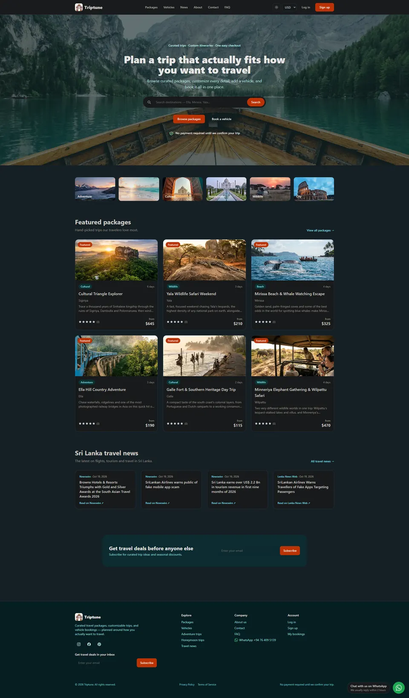
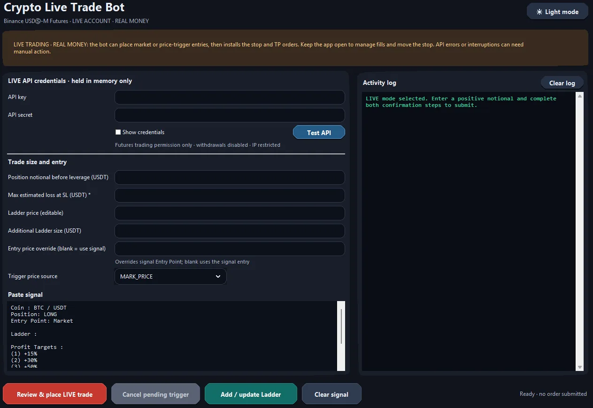
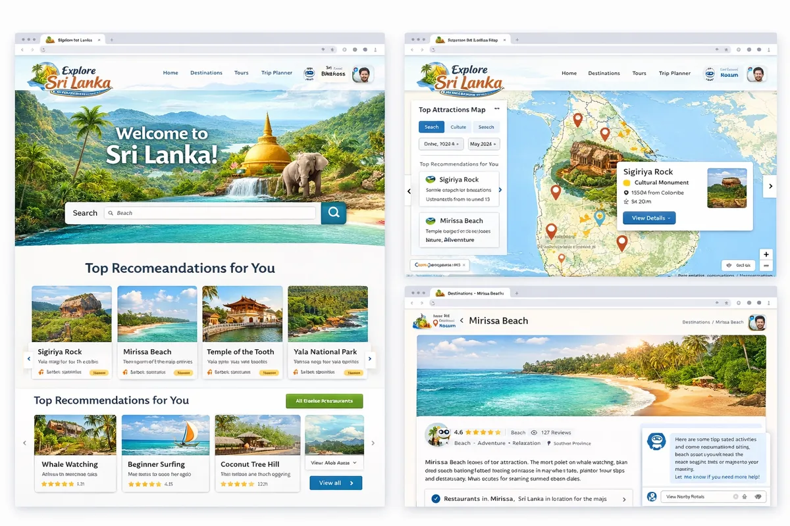
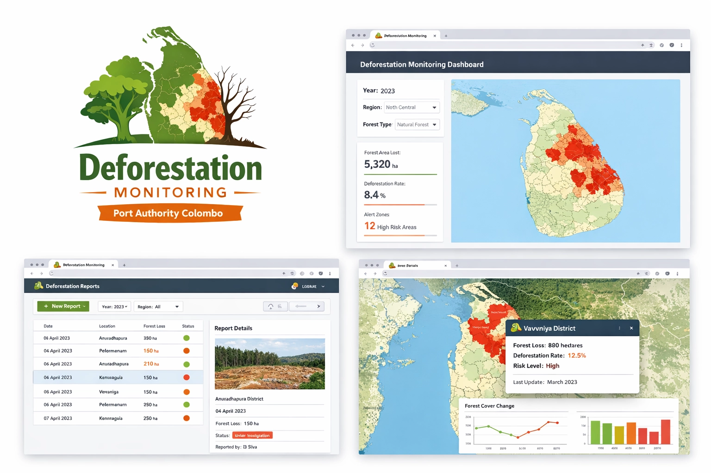
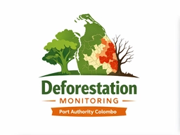

Android Mini Game
Basketball · Android · April 2021
I’m Ravindu Weerarathna, a software engineer with 5+ years of experience building and maintaining reliable full stack applications with C# and JavaScript.
Download my CV




I’m a full stack developer with experience across the software development lifecycle: building web applications, working with teams to understand requirements, and supporting systems after release.
Throughout my career, I have progressed from Associate Software Developer to Software Engineer / Full Stack Developer. Earlier roles gave me a foundation in development workflows, hardware support, and day-to-day IT operations. I am also studying Project Management at the University of Moratuwa.
I’m always up for a thoughtful conversation.